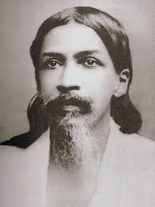

Patriots of Bengal
স্বাধীনতার সৈনিক

Netaji Subhas Chandra Bose
নেতাজি সুভাষচন্দ্র বসু
1897 – 1945
A fierce nationalist whose defiant patriotism made him a hero in India. He raised the Azad Hind Fauj and gave the clarion call, "Give me blood and I will give you freedom!"

Khudiram Bose
ক্ষুদিরাম বসু
1889 – 1908
One of the youngest revolutionaries of the Indian independence movement. He walked to the gallows with a smile, cementing his place in the folklore of Bengal.

বাঘা যতীন

Bipin Chandra Pal
বিপিন চন্দ্র পাল
1858 – 1932
One third of the "Lal Bal Pal" triumvirate. A brilliant orator and writer who was one of the main architects of the Swadeshi movement.

Aurobindo Ghose
অরবিন্দ ঘোষ
1872 – 1950
From a revolutionary leader in Bengal to a spiritual reformer in Pondicherry. His writings ignited the flame of militant nationalism among the youth.

Pritilata Waddedar
প্রীতিলতা ওয়াদ্দেদার
1911 – 1932
A fiery revolutionary who led the armed attack on the Pahartali European Club. She chose martyrdom over surrender, inspiring generations of women.